電路板智慧製造AI藍圖
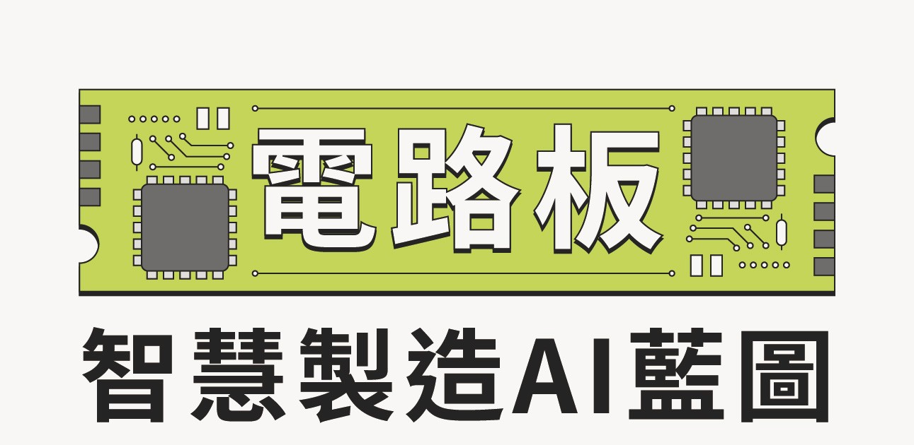
藍圖提供企業做為盤點現況、選擇題目與排定投資順序之工具，建議搭配「2026年電路板智慧製造導入指引」的說明及導入方法，選擇適合企業的切入點。
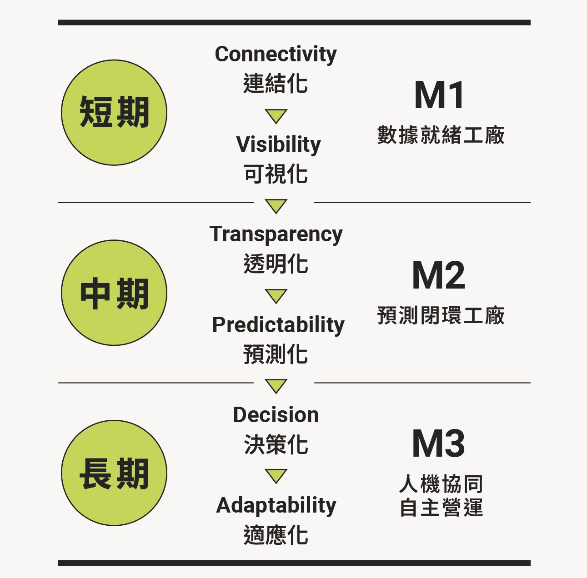
能力成熟度
- 短期：連結化（Connectivity）→ 可視化（Visibility）；M1 數據就緒工廠
- 中期：透明化（Transparency）→ 預測化（Predictability）；M2 預測閉環工廠
- 長期：決策化（Decision）→ 適應化（Adaptability）；M3 人機協同自主營運
短、中、長期代表能力成熟度，而非固定年限。一般而言，短期約為1至2年、中期約為3至4年、長期為5年以上；惟企業可依現況跨階段並行
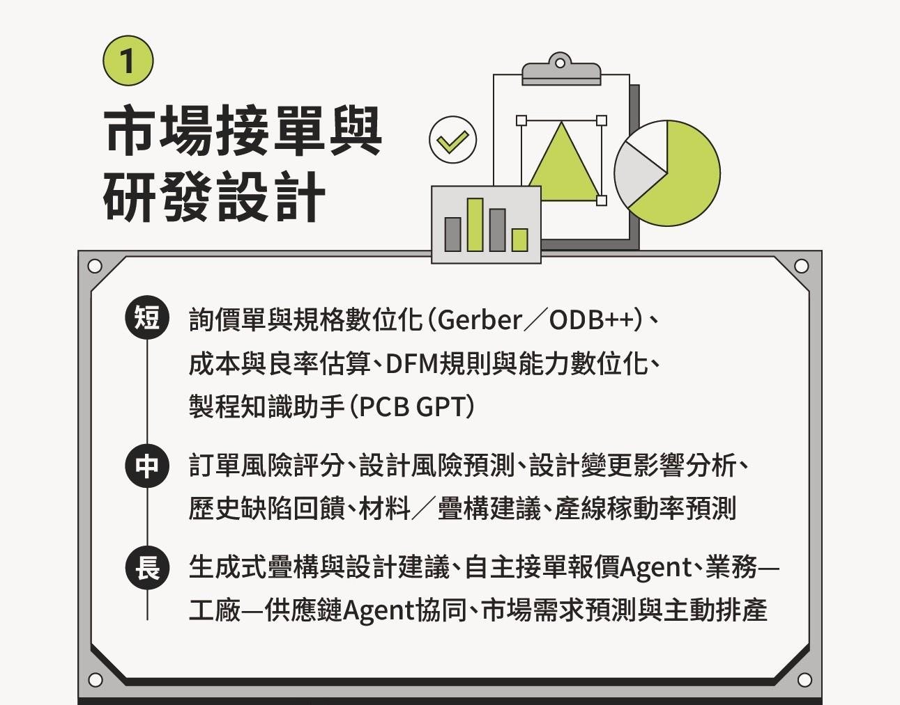
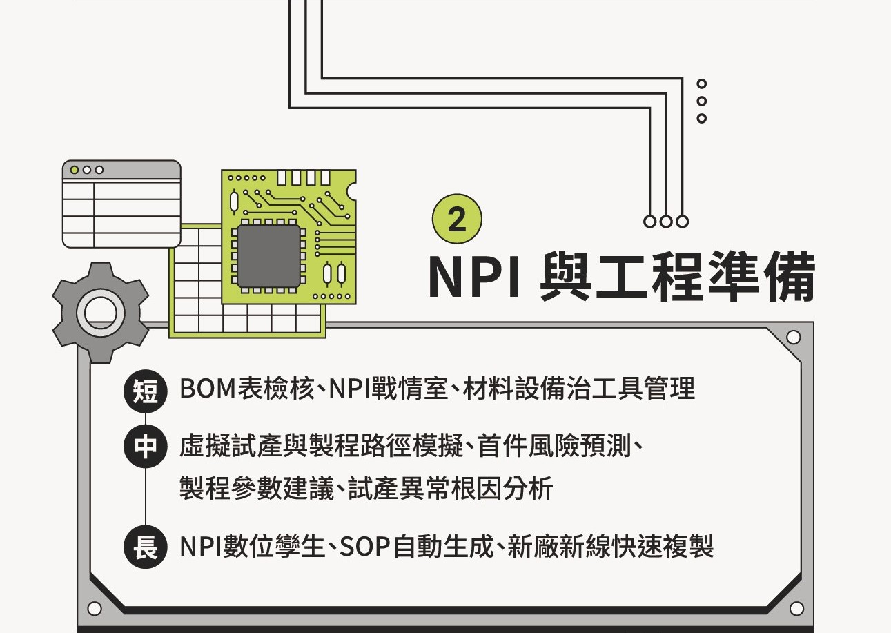
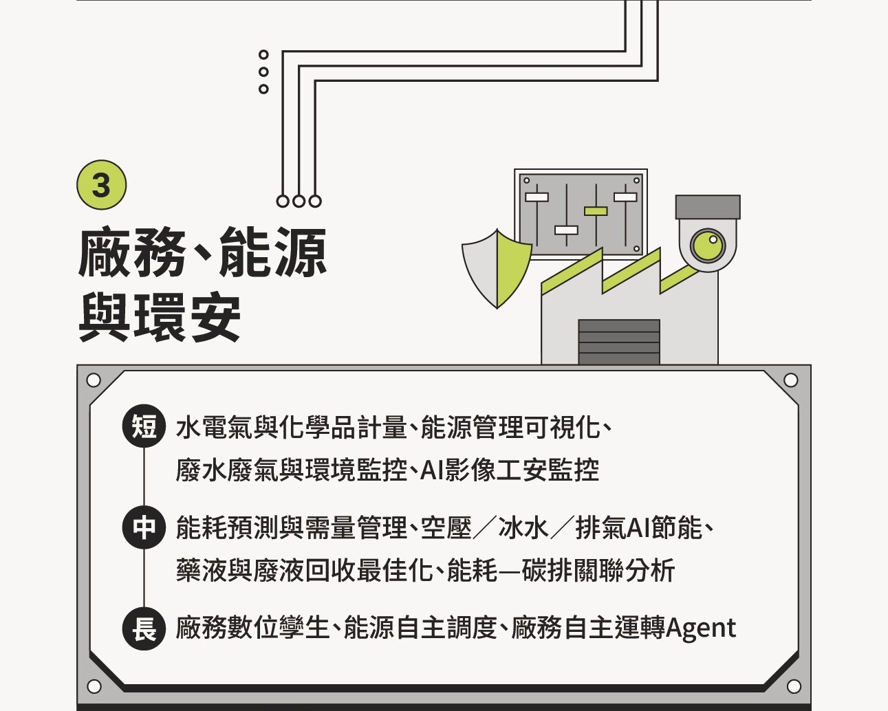
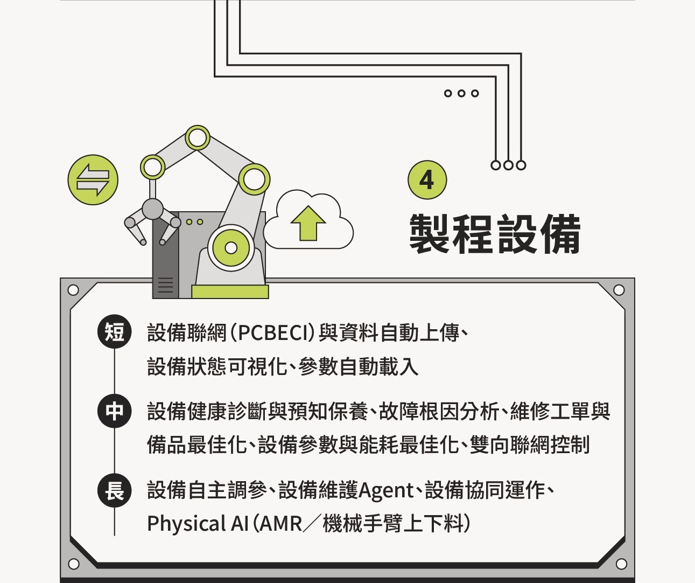
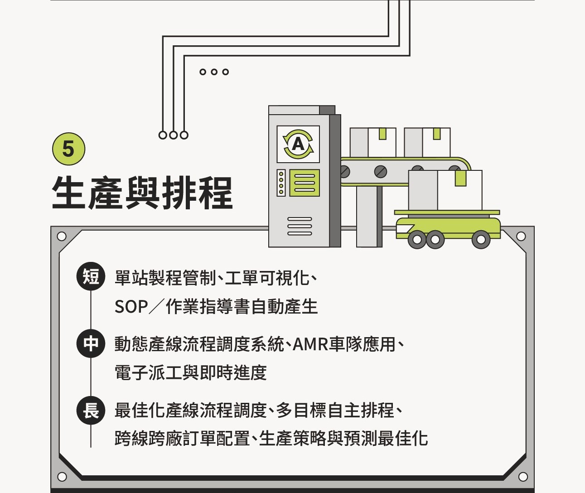
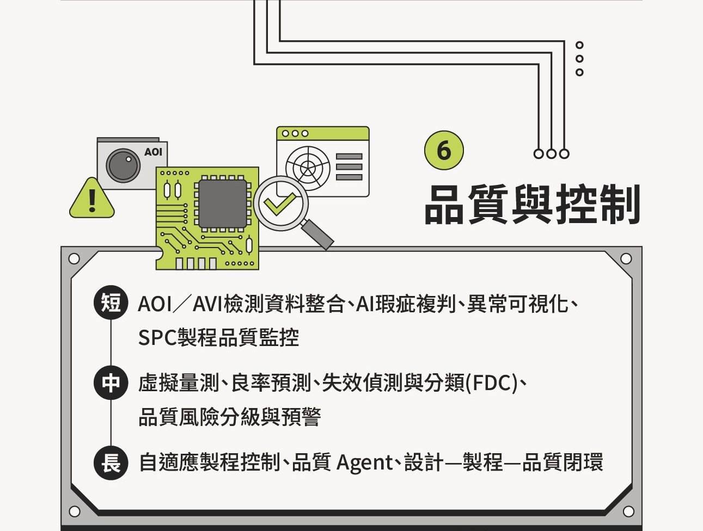
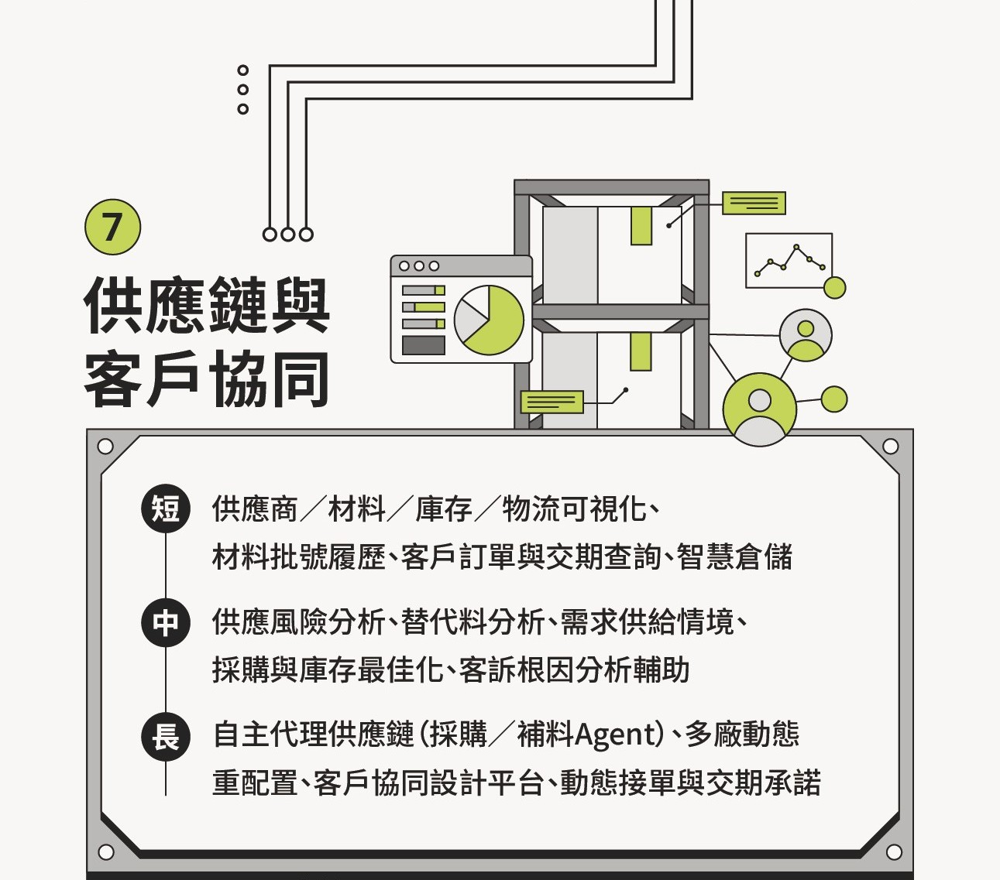
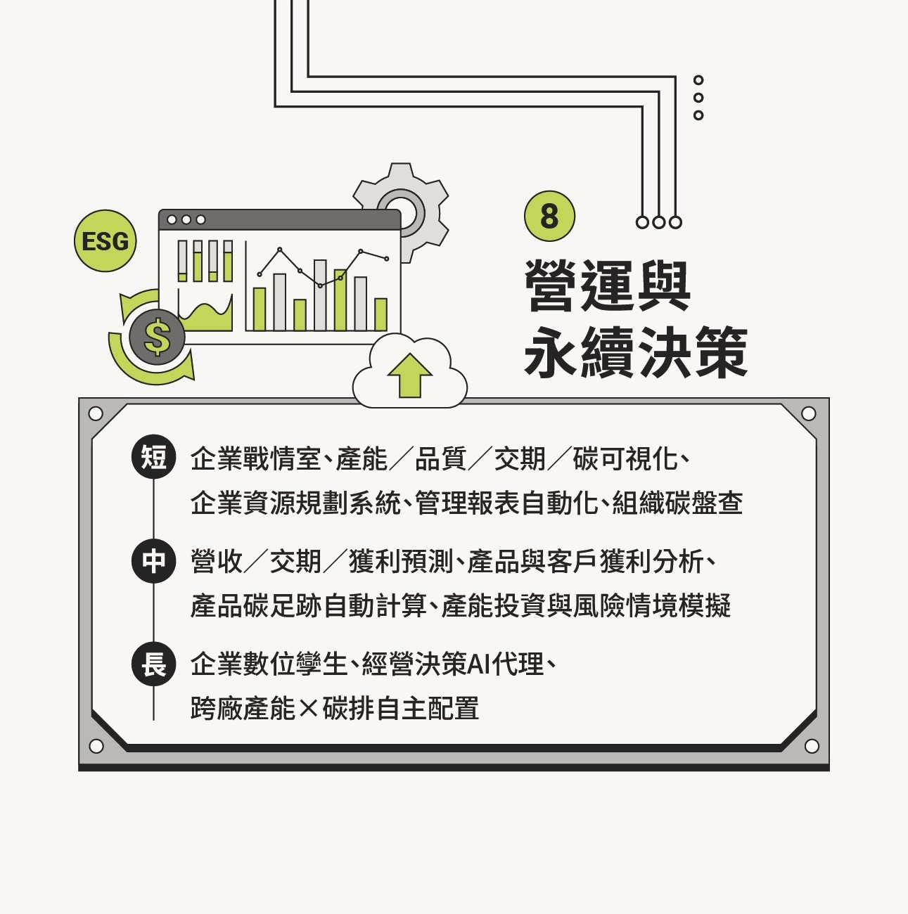
1 市場接單與研發設計
- 短期：詢價單與規格數位化（Gerber／ODB++）、成本與良率估算、DFM規則與能力數位化、製程知識助手（PCB GPT）
- 中期：訂單風險評分、設計風險預測、設計變更影響分析、歷史缺陷回饋、材料／疊構建議、產線稼動率預測
- 長期：生成式疊構與設計建議、自主接單報價Agent、業務—工廠—供應鏈Agent協同、市場需求預測與主動排產
2 NPI與工程準備
- 短期：BOM表檢核、NPI戰情室、材料設備治工具管理
- 中期：虛擬試產與製程路徑模擬、首件風險預測、製程參數建議、試產異常根因分析
- 長期：NPI數位孿生、SOP自動生成、新廠新線快速複製
3 廠務、能源與環安
- 短期：水電氣與化學品計量、能源管理可視化、廢水廢氣與環境監控、AI影像工安監控
- 中期：能耗預測與需量管理、空壓／冰水／排氣AI節能、藥液與廢液回收最佳化、能耗—碳排關聯分析
- 長期：廠務數位孿生、能源自主調度、廠務自主運轉Agent
4 製程設備
- 短期：設備聯網（PCBECI）與資料自動上傳、設備狀態可視化、參數自動載入
- 中期：設備健康診斷與預知保養、故障根因分析、維修工單與備品最佳化、設備參數與能耗最佳化、雙向聯網控制
- 長期：設備自主調參、設備維護Agent、設備協同運作、Physical AI（AMR／機械手臂上下料）
5 生產與排程
- 短期：單站製程管制、工單可視化、SOP／作業指導書自動產生
- 中期：動態產線流程調度系統、AMR車隊應用、電子派工與即時進度
- 長期：最佳化產線流程調度、多目標自主排程、跨線跨廠訂單配置、生產策略與預測最佳化
6 品質與控制
- 短期：AOI／AVI檢測資料整合、AI瑕疵複判、異常可視化、SPC製程品質監控
- 中期：虛擬量測、良率預測、失效偵測與分類（FDC）、品質風險分級與預警
- 長期：自適應製程控制、品質Agent、設計—製程—品質閉環
7 供應鏈與客戶協同
- 短期：供應商／材料／庫存／物流可視化、材料批號履歷、客戶訂單與交期查詢、智慧倉儲
- 中期：供應風險分析、替代料分析、需求供給情境、採購與庫存最佳化、客訴根因分析輔助
- 長期：自主代理供應鏈（採購／補料Agent）、多廠動態重配置、客戶協同設計平台、動態接單與交期承諾
8 營運與永續決策
- 短期：企業戰情室、產能／品質／交期／碳可視化、企業資源規劃系統、管理報表自動化、組織碳盤查
- 中期：營收／交期／獲利預測、產品與客戶獲利分析、產品碳足跡自動計算、產能投資與風險情境模擬
- 長期：企業數位孿生、經營決策AI代理、跨廠產能×碳排自主配置
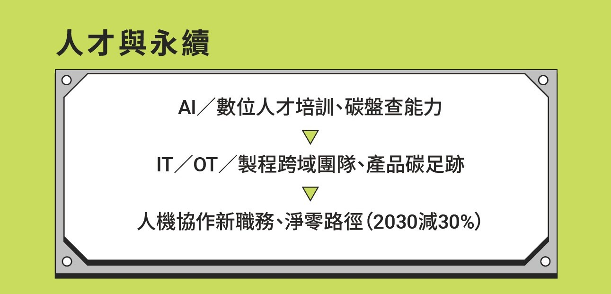
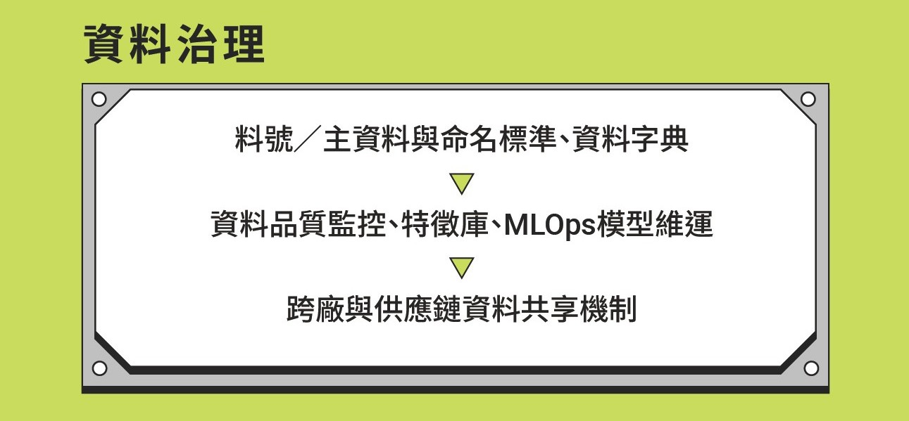
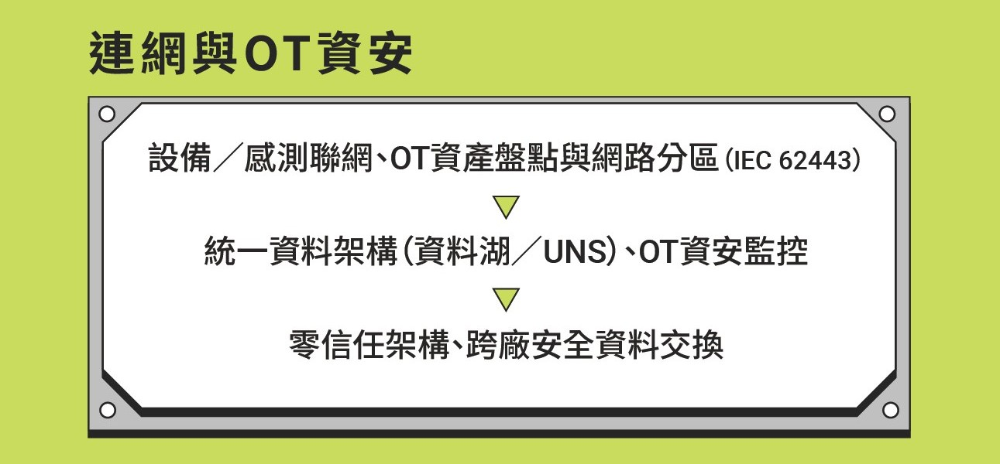
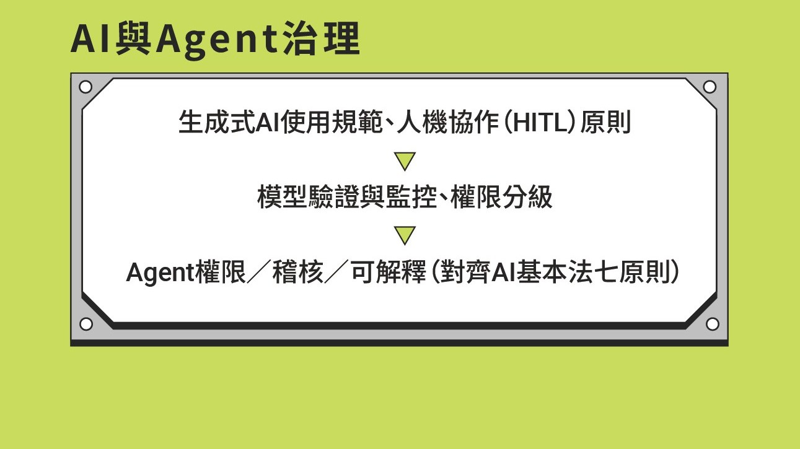
智慧製造基礎賦能
人才與永續
- AI／數位人才培訓、碳盤查能力
- IT／OT／製程跨域團隊、產品碳足跡
- 人機協作新職務、淨零路徑（2030減30%）
資料治理
- 料號／主資料與命名標準、資料字典
- 資料品質監控、特徵庫、MLOps模型維運
- 跨廠與供應鏈資料共享機制
連網與OT資安
- 設備／感測聯網、OT資產盤點與網路分區（IEC 62443）
- 統一資料架構（資料湖／UNS）、OT資安監控
- 零信任架構、跨廠安全資料交換
AI與Agent治理
- 生成式AI使用規範、人機協作（HITL）原則
- 模型驗證與監控、權限分級
- Agent權限／稽核／可解釋（對齊AI基本法七原則）